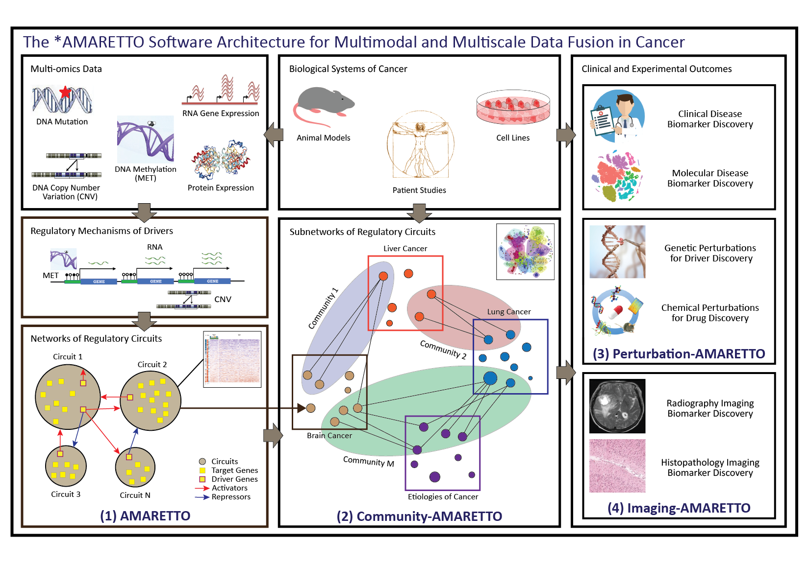

The *AMARETTO* software toolbox for network biology and medicine: multimodal and multiscale circuit-, network-, and graph-based fusion of multi-omics, clinical, imaging, and perturbation data across studies of patients, etiologies and model systems of complex human disease, including cancer, infectious, neurologic and immune-mediated diseases
NIH NCI CBIIT ITCR Cancer Data Science Pulse Blog
Informatics Technology for Cancer Research Program Drives and Fosters Community of Cancer Informatics Researchers: An *AMARETTO Tool Success Story.
https://datascience.cancer.gov/news-events/blog/informatics-technology-cancer-research-program-drives-and-fosters-community-cancer
The *AMARETTO software architecture. The *AMARETTO framework provides software tools for network biology and medicine, towards a data-driven platform for diagnostic, prognostic and therapeutic decision-making in cancer. The *AMARETTO platform offers modular and complementary solutions to multimodal and multiscale aspects of network graph-based fusion of multi-omics, clinical, imaging, and driver and drug perturbation data across studies of patients, etiologies and model systems of cancer. Specifically: (1) The AMARETTO algorithm learns networks of regulatory circuits - circuits of drivers and target genes - from functional genomics or multi-omics data and associates these circuits to clinical, molecular and imaging-derived phenotypes within each biological system (e.g., model systems or patients); (2) The Community-AMARETTO algorithm learns subnetworks of regulatory circuits that are shared or distinct across networks derived from multiple biological systems (e.g., model systems and patients, cohorts and individuals, diseases and etiologies, in vitro and in vivo systems); (3) The Perturbation-AMARETTO algorithm maps genetic and chemical perturbations in model systems onto patient-derived networks for driver and drug discovery, respectively, and prioritizes lead drivers, targets and drugs for follow-up with experimental validation; and (4) The Imaging-AMARETTO algorithm maps radiography and histopathology imaging data onto the patient-derived multi-omics networks for non-invasive radiography and histopathology imaging diagnostics.
The *AMARETTO framework in GenePattern Notebook
The *AMARETTO framework in GenePattern Notebook provides users with a complete analysis pipeline that enables running AMARETTO on one or multiple data cohorts and connecting them using Community-AMARETTO via GenePattern and GenomeSpace.
Preview: https://notebook.genepattern.org/services/sharing/notebooks/334/preview/
https://notebook.genepattern.org/user/amaretto-team/notebooks/The *AMARETTO framework in GenePattern Notebook.ipynb
(** Please note that you should login to https://notebook.genepattern.org with your own GenePattern user account, and then search for "The *AMARETTO framework in GenePattern Notebook" in the publicly available Notebooks. This Notebook runs directly on the GenePattern Amazon Cloud servers.)
The *AMARETTO framework in R Jupyter Notebook
The *AMARETTO framework in R Jupyter Notebook provides users with a complete analysis pipeline that enables running AMARETTO on one or multiple data cohorts and connecting them using Community-AMARETTO via GitHub and Bioconductor.
https://colab.research.google.com/drive/1JfnRoNgTVX_7VEGAAmjGjwP_yX2tdDxs
(** Please note that you can run "The *AMARETTO framework in R via GitHub and Bioconductor" directly on Google Colaboratory or your own servers.)
The *AMARETTO* software toolbox for network biology and medicine
We present *AMARETTO* as a software toolbox for network biology and medicine, towards developing a data-driven platform for diagnostic, prognostic and therapeutic decision-making in complex human disease, including cancer, infectious, neurologic and immune-mediated diseases. *AMARETTO* links diseases, drivers, targets and drugs via fusion of multi-omics, clinical, imaging, and driver and drug perturbation data across studies of patients, etiologies and model systems of complex human disease. Specifically, we are developing AMARETTO-Hub as a Knowledge Graph-based software platform that leverages the *AMARETTO software toolbox that offers modular and complementary solutions to multimodal and multiscale circuit-, network-, and graph-based fusion of multi-omics, clinical, imaging, and perturbation data across studies of patients, etiologies and model systems of complex human disease:- AMARETTO learns networks of regulatory circuits - circuits of drivers and their target genes - from functional genomics or multi-omics data and associates these circuits to clinical, molecular, and imaging-derived phenotypes within each biological system (e.g., model systems or patients);
- Community-AMARETTO learns subnetworks of regulatory circuits that are shared or distinct across networks derived from multiple biological systems (e.g., model systems and patients, cohorts and individuals, diseases and etiologies, in vitro and in vivo systems);
- Imaging-AMARETTO maps radiography and histopathology imaging data onto the patient-derived multi-omics networks for imaging diagnostics and prognostics to identify clinically relevant imaging biomarkers and decipher their underlying molecular mechanisms;
- Perturbation-AMARETTO maps genetic and chemical perturbations in model systems onto patient-derived multi-omics networks for driver and drug discovery, respectively, and prioritizes lead drivers, targets and drugs for follow-up with experimental validation;
- AMARETTO-Hub facilitates Knowledge Graph-based embedding of knowledge learned via multimodal and multiscale circuit-, network-, and graph-based data fusion in previous steps, which enables querying and visualizing these complex graph-structured representations in highly sophisticated, efficient, and user-friendly ways.
Use Cases: applications to studies of complex human disease
We demonstrate the utility of the AMARETTO-Hub platform and *AMARETTO software tools via several Use Cases integrating multi-omics, clinical, imaging, and driver and drug perturbation data across model systems, etiologies, and patient studies of complex human disease, including cancer, infectious diseases, neurologic and immune-mediated diseases. Our work provides insights into how mapping pharmacogenomic data onto these networks enables to prioritize lead drivers, targets, and drugs for follow-up with experimental validation, towards better diagnostics, prognostics, and therapeutics of complex human disease.Use Cases
- A pan-cancer study where we integrated patient multi-omics data across 12 cancer sites from TCGA (BLCA, BRCA, COADREAD, GBM, HNSC, KIRC, LAML, LIHC, LUAD, LUSC, OV and UCEC) to identify novel pan-cancer drivers of smoking-induced cancer and ‘antiviral’ interferon-modulated innate immune response across these cancers that we validated using genetic perturbations in cell lines from LINCS/CMAP. For example, we identified the methylation-driven GPX2 gene as a pan-cancer driver of smoking-induced cancer, and we validated these findings by using knockdown experiments of GPX2 in the LUAD A549 cell line from LINCS/CMAP to confirm that knocking down GPX2 represses GPX2-regulated circuits. (EBioMedicine 2018)
- A study of glioblastoma multiforme (GBM) and low-grade glioma (LGG) where we identified drivers of molecular mechanisms associated with clinically relevant radiography and histopathology imaging features, for which we integrated the patient multi-omics and radiography imaging data from the TCGA GBM and TCGA LGG cohorts with the patient transcriptomics refined for cell populations and histopathology imaging data from IvyGAP GBM. We identified known key drivers of tumor-associated microglia and macrophage mechanisms, mediated by STAT3, AHR, and CCR2, and neurodevelopmental and stemness mechanisms, mediated by OLIG2, and we uncovered novel master drivers, THBS1 and MAP2, that establish relationships across these distinct mechanisms. (Journal of Clinical Oncology - Clinical Cancer Informatics 2020)
- A study of hepatitis B (HBV) and C (HCV) virus-induced hepatocellular carcinoma (LIHC) where we identified drivers and drugs, for which we integrated 6 liver disease data sets (TCGA LIHC patient multi-omics data, CCLE liver cell line multi-omics data, HCV and HBV infection host response time course and single-cell RNA-Seq data in Huh7 and HepG2 cell line models). We predicted drug treatments for chemoprevention of hepatocellular carcinoma of viral and other etiologies, including hepatitis C and B virus-induced cancer, which we did by leveraging chemical perturbation studies combined with host responses to viral infections in single cells. Experimental validation confirmed that two novel predicted compounds indeed attenuate liver fibrosis and cancer development in rats, and thus, potentially offer a safe and low-cost approach for chemoprevention of hepatitis C and B virus-infected patients who are at greater risk of progressing to hepatocellular carcinoma. Inspired by this work, we are developing and enhancing *AMARETTO* for drug discovery. (Gastroenterology 2019, Nature Communications 2021)
- A pan-cancer study of squamous cell carcinoma (SCC) across five SCC cancer sites from TCGA (LUSC, HNSC, ESCA, CESC and BLCA), for deciphering smoking and human papillomavirus infection as etiologies of SCC, and where we leveraged genetic and chemical perturbations in cell lines from LINCS/CMAP for driver and drug discovery.
- A study of SARS-CoV-2 virus-induced COVID-19 and other viral infections and virus-induced diseases, such as viruses SARS-CoV-2, SARS-CoV, MERS-CoV, RSV, IAV, Ebola, and HIV, and their outcomes, such as COVID-19, ARDS, and sepsis, measured in various tissues, cell types, and single cells, such as lung, blood, intestine, epithelial, and immune cells, as a growing resource where emerging public datasets comprising multi-omics and phenotypic data derived from healthy and diseased tissues and cells in model systems and patient studies are continuously analyzed and integrated
- ...
Reports with results from Use Cases
- Use Case 1: hepatitis C and B virus-induced hepatocellular carcinomaHTML Report: http://portals.broadinstitute.org/pochetlab/demo/cAMARETTO_Liver_6DS/index.html
Neo4j/Shiny Report: https://pochetlab.shinyapps.io/AMARETTO-Hub_Liver_6DS/
- Use Case 2: multi-omics and imaging data fusion in brain cancers
HTML Report: http://portals.broadinstitute.org/pochetlab/JCO_CCI_Imaging-AMARETTO/Imaging-AMARETTO_HTML_Report_TCGA-GBM_IVYGAP-GBM_TCGA-LGG/index.html
Neo4j/Shiny Report: https://pochetlab.shinyapps.io/AMARETTO-HUB_TCGA-GBM_IVYGAP-GBM_TCGA-LGG/
- Use Case 3: pan-squamous cell carcinoma across 5 cancer sites
HTML Report: http://portals.broadinstitute.org/pochetlab/demo/cAMARETTO_PanCancer_5DS/index.html
Neo4j/Shiny Report: https://pochetlab.shinyapps.io/AMARETTO-Hub_SCC_5DS/
- Use Case 4: SARS-CoV-2 virus-induced COVID-19 (and other viral infections and virus-induced diseases)
HTML Report: http://portals.broadinstitute.org/pochetlab/demo/cAMARETTO_COVID19/index.html
Neo4j/Shiny Report: https://pochetlab.shinyapps.io/COVID19_Hub/
Availability of software and resources
The *AMARETTO* software toolbox is available as user-friendly tools via GitHub, Bioconductor and R Jupyter Notebook to enable further algorithm and software development and via GenePattern, GenomeSpace and GenePattern Notebook to reach a broad audience of biomedical researchers. The *AMARETTO* software tools generate results as HTML reports with queryable tables, and heatmap and graph visualizations in an automated manner, and AMARETTO-Hub additionally provides users with Neo4j-embedded Shiny reports that allow users to interactively visualize and interrogate results and that redirect users to the *AMARETTO-generated HTML reports. For each of the Use Cases of complex human diseases, we provide the biomedical research community with R Jupyter Notebook workflows that run the GitHub and Bioconductor repositories on Google Colaboratory, and GenePattern Notebooks that run the GenePattern modules in the Amazon Cloud.GitHub and Bioconductor R packages
- AMARETTO: https://bioconductor.org/packages/release/bioc/html/AMARETTO.html and https://github.com/gevaertlab/AMARETTO- Community-AMARETTO: https://github.com/broadinstitute/CommunityAMARETTO
- Imaging-AMARETTO: https://github.com/broadinstitute/ImagingAMARETTO/
- Perturbation-AMARETTO: under development
- AMARETTO-Hub: under development https://github.com/broadinstitute/AMARETTO-Hub
GenePattern modules running on the GenePattern Amazon Cloud servers
- AMARETTO: https://cloud.genepattern.org/gp/pages/index.jsf?lsid=urn:lsid:broad.mit.edu:cancer.software.genepattern.module.analysis:00378- Community-AMARETTO: https://cloud.genepattern.org/gp/pages/index.jsf?lsid=urn:lsid:broad.mit.edu:cancer.software.genepattern.module.analysis:00381
- The AMARETTO and Community-AMARETTO modules in GenePattern are also available within GenomeSpace: http://www.genomespace.org/
GenePattern Notebook and R Jupyter Notebook
The GenePattern Notebook and R Jupyter Notebook provide users with a complete analysis pipeline that enables running AMARETTO on one or multiple data cohorts and connecting them using Community-AMARETTO. Each AMARETTO and Community-AMARETTO analysis generates a detailed report of genome-wide networks inferred from one cohort and/or shared/distinct across multiple cohorts. These reports include queryable tables and visualizations (heatmaps and network graphs) of shared/distinct cell circuits and their drivers, as well as their functional and phenotypic characterizations.The GenePattern Notebook runs directly on the GenePattern Amazon Cloud servers.
https://notebook.genepattern.org/services/sharing/notebooks/334/preview/
https://notebook.genepattern.org/user/amaretto-team/notebooks/The *AMARETTO framework in GenePattern Notebook.ipynb
The R Jupyter Notebook runs via GitHub or Bioconductor on Google Colaboratory or your own servers.
https://colab.research.google.com/drive/1JfnRoNgTVX_7VEGAAmjGjwP_yX2tdDxs
R Jupyter Notebooks for running Use Cases on Google Colaboratory servers
- Use Case 1: hepatitis C and B virus-induced hepatocellular carcinomahttps://colab.research.google.com/drive/17GieTfYriTVlbKchl-OEb5nI_NA2vvjQ
- Use Case 2: multi-omics and imaging data fusion in brain cancers
https://colab.research.google.com/drive/1i9M5vNfLm2VWi6qDkh04Z2lBE4NEc6XP
- Use Case 3: pan-squamous cell carcinoma across 5 cancer sites
https://colab.research.google.com/drive/17RwBxwWWnXJMRI_VZl-X-hztJTwvlFjl
Talks
Brigham and Women's Hospital / Harvard Medical School meeting, Boston, 2019: SlidesBioconductor meeting, Brussels, 2019: Slides Workshop
NIH NCI CBIIT webinar, 2019: Abstract Slides
NIH NCI ITCR meeting, Salt Lake City, 2019: Abstract Poster Slides
R/BioC Meetup at Dana-Farber Cancer Institute / Harvard Medical School, Boston, 2019: Slides
Publications
Gevaert O, Nabian M, Bakr S, Everaert C, Shinde J, Manukyan A, Liefeld T, Tabor T, Xu J, Lupberger J, Haas BJ, Baumert TF, Hernaez M, Reich M, Quintana FJ, Uhlmann EJ, Krichevsky AM, Mesirov JP, Carey V, Pochet N. (2020) Imaging-AMARETTO: An Imaging Genomics Software Tool to Interrogate Multiomics Networks for Relevance to Radiography and Histopathology Imaging Biomarkers of Clinical Outcomes. Journal of Clinical Oncology Clinical Cancer Informatics, 4:421-435. PMID: 32383980.Champion M, Brennan K, Croonenborghs T, Gentles AJ, Pochet N, Gevaert O. (2018) Module Analysis Captures Pancancer Genetically and Epigenetically Deregulated Cancer Driver Genes for Smoking and Antiviral Response. EBioMedicine, 27:156-166. PMID: 29331675.
Gevaert O, Villalobos V, Sikic BI, Plevritis SK. (2014) Identification of ovarian cancer driver genes by using module network integration of multi-omics data. Interface Focus, 3(4):20130013. PMID: 24511378.
Gevaert O, Plevritis S. (2013) Identifying master regulators of cancer and their downstream targets by integrating genomic and epigenomic features. Pacific Symposium on Biocomputing, 2013:123-34. PMID: 23424118.
Related publications:
Crouchet E, Bandiera S, Fujiwara N, Li S, El Saghire H, Fernández-Vaquero M, Riedl T, Sun X, Hirschfield H, Jühling F, Zhu S, Roehlen N, Ponsolles C, Heydmann L, Saviano A, Qian T, Venkatesh A, Lupberger J, Verrier ER, Sojoodi M, Oudot MA, Duong FHT, Masia R, Wei L, Thumann C, Durand SC, González-Motos V, Heide D, Hetzer J, Nakagawa S, Ono A, Song WM, Higashi T, Sanchez R, Kim RS, Bian CB, Kiani K, Croonenborghs T, Subramanian A, Chung RT, Straub BK, Schuppan D, Ankavay M, Cocquerel L, Schaeffer E, Goossens N, Koh AP, Mahajan M, Nair VD, Gunasekaran G, Schwartz ME, Bardeesy N, Shalek AK, Rozenblatt-Rosen O, Regev A, Felli E, Pessaux P, Tanabe KK, Heikenwälder M, Schuster C, Pochet N, Zeisel MB, Fuchs BC, Hoshida Y, Baumert TF. (2021) A human liver cell-based system modeling a clinical prognostic liver signature for therapeutic discovery. Nature Communications, 12(1):5525. PMID: 34535664.
Lupberger J, Croonenborghs T, Roca Suarez AA, Van Renne N, Jühling F, Oudot MA, Virzì A, Bandiera S, Jamey C, Meszaros G, Brumaru D, Mukherji A, Durand SC, Heydmann L, Verrier ER, El Saghire H, Hamdane N, Bartenschlager R, Fereshetian S, Ramberger E, Sinha R, Nabian M, Everaert C, Jovanovic M, Mertins P, Carr SA, Chayama K, Dali-Youcef N, Ricci R, Bardeesy NM, Fujiwara N, Gevaert O, Zeisel MB, Hoshida Y, Pochet N*, Baumert TF*. (2019) Combined Analysis of Metabolomes, Proteomes, and Transcriptomes of Hepatitis C Virus-Infected Cells and Liver to Identify Pathways Associated With Disease Development. Gastroenterology, 157(2):537-551.e9. PMID: 30978357. *contributed equally.
Stubbs BJ, Gopaulakrishnan S, Glass K, Pochet N, Everaert C, Raby B, Carey V. (2019) TFutils: Data structures for transcription factor bioinformatics. F1000 Research, 8:152. PMID: 31297189.
Cedoz PL, Prunello M, Brennan K, Gevaert O. (2018) MethylMix 2.0: an R package for identifying DNA methylation genes. Bioinformatics, 34(17):3044-3046. PMID: 29668835.
Qu K, Garamszegi S, Wu F, Thorvaldsdottir H, Liefeld T, Ocana M, Borges-Rivera D, Pochet N, Robinson JT, Demchak B, Hull T, Ben-Artzi G, Blankenberg D, Barber GP, Lee BT, Kuhn RM, Nekrutenko A, Segal E, Ideker T, Reich M, Regev A, Chang HY, Mesirov JP. (2016) Integrative genomic analysis by interoperation of bioinformatics tools in GenomeSpace. Nature Methods, 13(3):245-247. PMID: 26780094.
Gevaert O, Tibshirani R, Plevritis SK. (2015) Pancancer analysis of DNA methylation-driven genes using MethylMix. Genome Biology, 16(1):17. PMID: 25631659.
Gevaert O. (2015) MethylMix: an R package for identifying DNA methylation-driven genes. Bioinformatics, 31(11):1839-41. PMID: 25609794.
Manolakos A, Ochoa I, Venkat K, Goldsmith AJ, Gevaert O. (2014) CaMoDi: a new method for cancer module discovery. BMC Genomics, 15 Suppl 10:S8. PMID: 25560933.